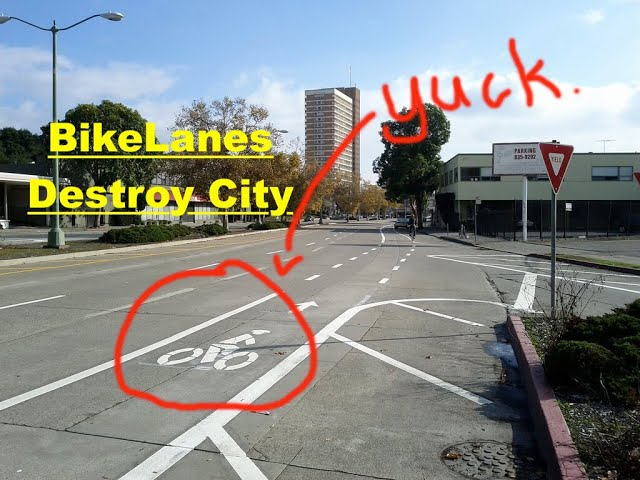

The documented premise
Reallocating road space changes how a corridor operates. Where a motor-vehicle lane is removed, some drivers may experience longer queues or different travel patterns, particularly during peak periods. Outcomes depend on intersection design, demand, parallel routes, parking, loading, and how many trips shift to another mode.
The campaign interpretation
A person on a bicycle occupies dramatically less space than a person in a large vehicle. This makes the cyclist difficult to see from a campaign focused exclusively on vehicle counts, and therefore statistically optional.
The lane utilization doctrine
Our proposed audit assigns every curb-to-curb foot to its highest and best use: moving, storing, turning, or briefly idling a private automobile. Trees may remain where they do not interfere with sight lines to drive-through menu boards.

The omitted tradeoffs
Street design allocates risk and access as well as capacity. Protected facilities can make cycling possible for people unwilling to mix with fast traffic, while removing or narrowing vehicle lanes may create driver delay. A credible evaluation should count people, crashes, access, travel time, and maintenance, not only cars per hour.